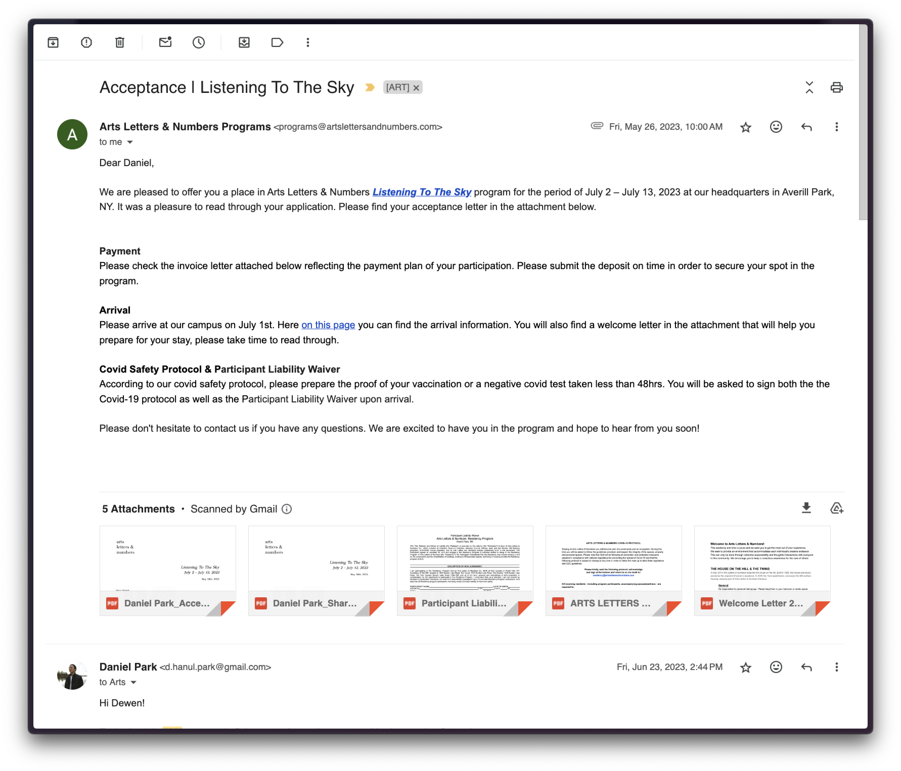
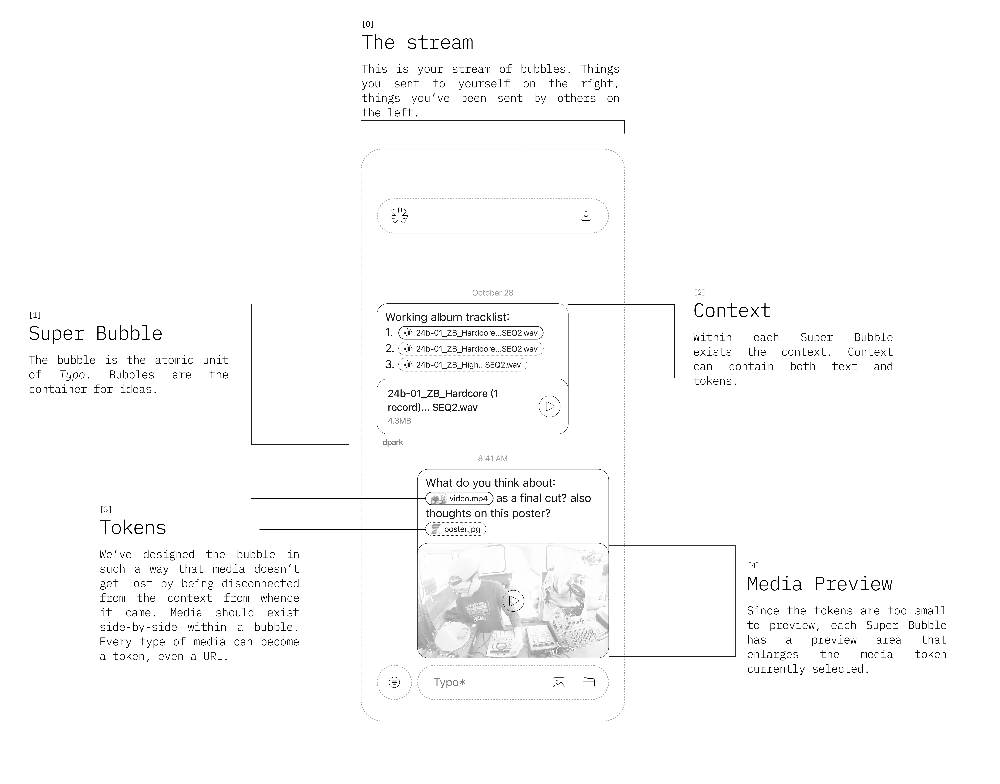

2023.08.07
Digital communication has been evolving at a rapid pace, yet the design paradigms of messaging apps have remained largely stagnant. Particularly the use of the bubble design for text conversations. While the bubble design was once a revolutionary approach that mirrored the nature of conversation, it falls short in addressing the multifaceted needs of modern digital communication, such as information density, contextual understanding, and digital attachments.
Intermingling contexts
In a bustling chat, messages from different topics can intermingle, making it hard to follow a single thread of discussion. Because of the single timeline based stream, this can lead to confusion because one moment you're talking about feedback for a project and right after you send a meme – disconnecting the flow of conversation.
fig. 1. Sahil losing context of the conversation
Attachments, are just attached?
The integration of attachments such as images, documents, and links have become a cornerstone of our messaging experience. However, they way attachments are presented in the context of the conversation is inefficient because they are not related to the text at all. Most attachments are sent before or after the actual message is sent.
When attachments are divorced from the text that references or explains them, it disrupts the natural flow of convesation and understanding. This design flaw can result in important attachments being overlooked or lost in the shuffle of conversation.
fig. 2. Materials mentioned in the email attached at the bottom
fig. 3. Attachments disconnected from the message
What if you could embed attachments in bubbles via media tokens? The Super Bubble
Attachments in digital messaging should be embedded directly within the chat bubble, closely aligning with the relevant text to which they pertain. This integrated approach enxures that the attachment is immediately visible in the context of the conversation. By embedding attachments in the bubble, the interplay between context and the file foster a better understanding of the message's intent.
fig. 4. Attachments within the chat bubble
What if you could nest conversations in a bubble?
With this new bubble paradigm, it would be useful to be able to organize conversations surrounding it in a neater way than linear reply UI patterns like in iMessage.
fig. 5. Attachments within the chat bubble
fig. 6. Technical diagram of the superbubble